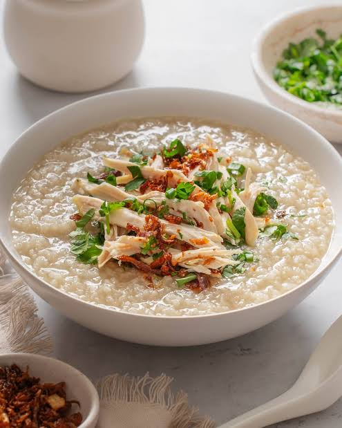

Home
Chao Ga Recipe

Description
Chao Ga is the Vietnamese version of classic porridge with chicken.
This recipe uses one whole gà đi bộ, or walking chicken in Vietnamese. These are leaner free ranged / cage free chicken known for having meat that is more firm and richer in flavor.
The whole chicken is cooked down in the broth to extract all the nutrients and flavor.
Rice is then added to simmer alongside ginger and mushroom before being seasoned and garnished generously to create the most comforting dish on a cold day.
Ingredients
Main
- One Whole Chicken (gà đi bộ)
- One Large Chopped Onion
- 4 Two Inch Knobs of Ginger sliced
- 16oz Mushrooms
- 1.75 Cups Uncooked Rice
- 1.5tbsp Mushroom Seasoning
- 1tbsp fish sauce
- Salt
Others & Garnish
- Green Onion
- Cilantro
- Soy Sauce
- White Pepper
Instructions
- Add 16 cups of filtered water to a pot and bring to a simmer.
- Add the whole chicken (be sure to remove any organ parts) and simmer for ~40 minutes (10 min/lb chicken).
- Remove chicken from the pot and shred. Skim off scum from the top.
- Add the whole chopped onion, sliced ginger, 16oz of mushrooms, and 1.75 cups of uncooked rice to the pot and simmer for 45 minutes or until desired consistency.
- Season with 1.5tbsp mushroom seasoning and 1tbsp fish sauce.
- Salt to taste.
Serving
- Serve generously in a large bowl with green onion, cilantro, soy sauce, and pepper.